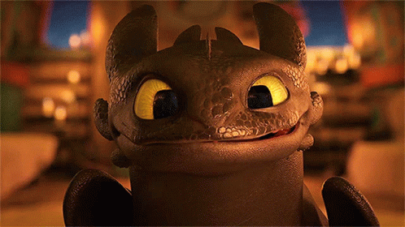

Юный викинг Иккинг, вопреки традициям своего племени, не стал убивать дракона, а решил его понять. Он обнаружил, что страх и агрессия проистекают от незнания, и начал с осторожного приближения. Доверие было построено на совместном полёте, где они учились чувствовать друг друга. Иккинг накормил раненого Беззубика и не стал его приковывать, дав ему свободу выбора. Так, через сострадание и взаимопомощь, родилась самая крепкая дружба между человеком и драконом.
